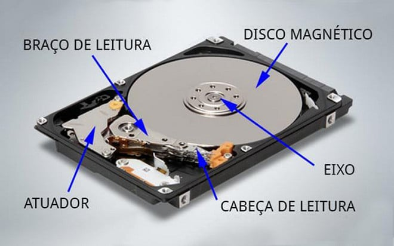

HD e SSD:
Como é o HD ou SSD:
HD:

SSD:

O que é um HD e SSD?
Tanto o HD quanto o SSD são componentes do computador que funcionam como armazenamento, então... Sim
basicamente é no HD ou SSD (Dependendo do que você colocou no computador) é onde irá guardar o seu
sistema operacional, aplicativos e outros softwares.
Qual a diferença entre um HD e um SSD?:
HD (Hard Disk): Basicamente dentro possui um disco magnético que gira para poder rodar os sistemas, além
de ser mais barato e mais lento.
SSD (Solid State Disk): Usa memória eletrônica (No caso não possui partes móveis) e é muito mais rápido que
um HD.